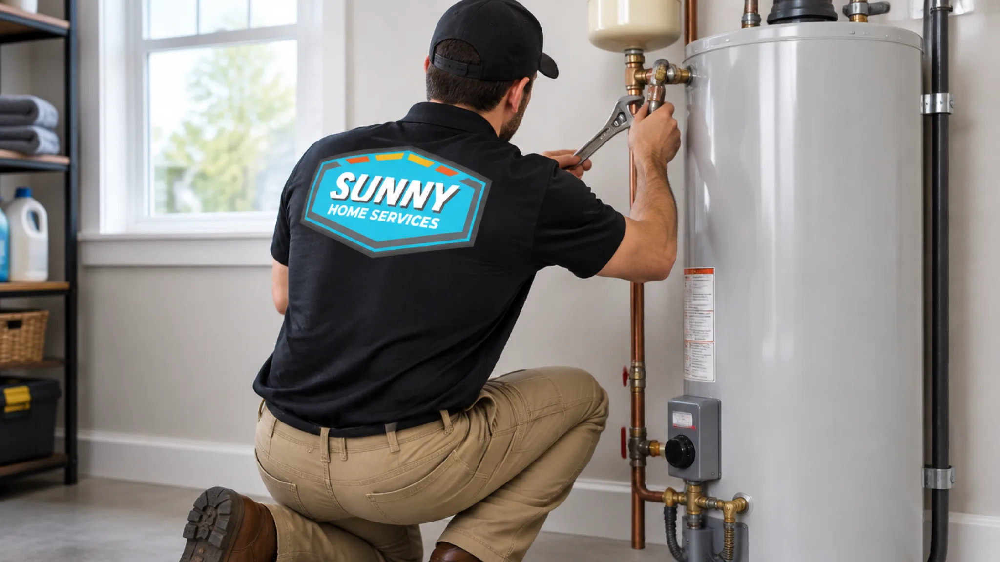

385.853.8116

If you find your water heater leaking from the bottom, don’t ignore it. While water around the base can come from something as simple as a loose connection or valve, it can also mean the tank has reached the end of its useful life. For homeowners along the Wasatch Front, where hard water can significantly shorten a tank’s lifespan, it’s important to identify the cause as quickly as possible. At Sunny Home Services, we offer same-day response for no-heat emergencies, clear arrival windows, and a heads-up text with your technician’s bio before we arrive. Here we’ll cover the types of issues that can cause your water heater to leak, the steps to take when you notice it leaking, and when to call a professional.
If you’re wondering what to do if your water heater is leaking, we advise you to follow these steps immediately:
It’s not advisable to shower while your water heater’s leaking. With any water heater, a significant leak can damage your home while it continues filling and heating. Worse, if water collects around an electric heater, you risk electrical shock.

Water leaking from your water heater at the bottom of your tank can be caused by a number of issues, many of which a qualified technician can fix.
If your tank appears to be leaking from the bottom, there’s no reliable way to know how long it will keep working without properly diagnosing the leak source to determine whether it can be repaired. A leaking valve, fitting, or connection may be repairable. Age also matters. If the tank’s in good condition and the problem is limited to an easily replaceable component, a repair can give you more useful life. If the tank itself is leaking, or if your water heater is older and already showing signs of wear, it may not be worth continuing to pay for repairs. If replacement is the better option, installing a new water heater also lets you choose a unit that better matches your household’s hot-water needs.
Not sure where to start? A technician can look at it the same day and tell you what it needs.
Book NowAlways call a plumber if water is leaking from your water heater, especially if you can’t identify the source or it keeps leaking even when the water’s off. A professional will determine whether you’re dealing with a failed valve, loose connection, pressure problem, sediment buildup, or a tank that’s reached the end of its life. If water heater repair can address the problem cost-effectively, that’s the route to take. If your water heater is working as expected, but you want to reduce the chance of future leaks, calling a professional for regular water heater maintenance can help to identify worn components and other issues early enough to avoid failure.
When your water heater is leaking from the bottom, Sunny Home Services can find the source and help you decide what to do next. We were built to support local homeowners with enterprise-grade scheduling and technology, upfront flat-rate pricing, fast, guaranteed emergency response, and flexible financing for qualifying projects. All our work is backed by our satisfaction guarantee. You’ll get the professionalism of a large chain, plus the personal touch and reliability of a small independent operator, and a team hired and trained for trustworthiness. Contact us today to schedule an inspection and get a straightforward recommendation.


When you need HVAC and plumbing services along the Wasatch Front, count on Sunny Home Services for fast, honest, technology-driven solutions. With same-day response, upfront flat-rate pricing, and heating, cooling, and plumbing all under one roof, you’ll have a company you can trust for the whole home.